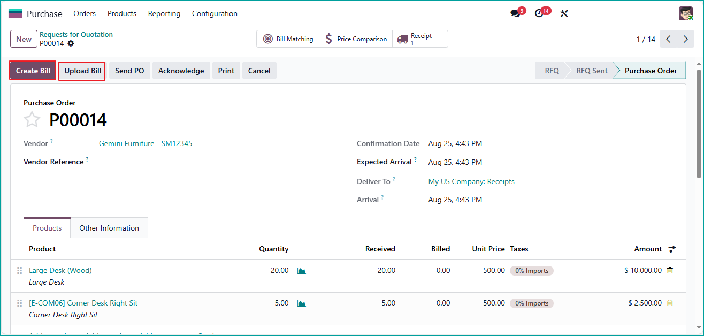

In Odoo 19, the familiar Create Bill button in the Purchase Order form view was replaced with an Upload Bill option, creating challenges for users who rely on quick and direct bill creation as part of their workflow. This custom module brings back the missing button alongside the new Upload Bill feature, enabling you to manage vendor bills seamlessly without uploading documents.
The Restore Create Bill Button module is designed for businesses upgrading to Odoo 19 who prefer the classic bill creation workflow. In Odoo 19, the Create Bill button was replaced with Upload Bill, but this app restores the original option alongside the new one, giving you the flexibility to choose the workflow that best fits your process.
This solution is lightweight, fully integrated, and developed following Odoo's official guidelines.
If you have any questions or encounter issues, our team is here to help. We provide fast, friendly, and reliable support.
Email: mohsen.waleed@gmail.com